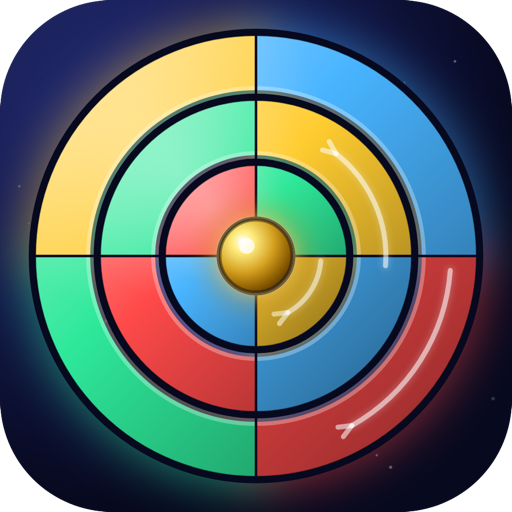

Rolix
Colección de puzzles lógicos.
Próximamente en iOS y AndroidRolix reúne seis puzzles lógicos con un diseño cuidado y dificultad progresiva, para jugar partidas cortas o largas, sin anuncios ni complicaciones.
Seis puzzles
- Orbit: gira los anillos hasta ordenar los colores.
- Shift: desliza filas y columnas hasta que cada fila quede de un solo color.
- Nonogram: descubre la imagen oculta a partir de las pistas de filas y columnas.
- Slitherlink: dibuja un único bucle cerrado respetando los números.
- Hashi: conecta todas las islas con puentes según el número de cada una.
- Nurikabe: separa las islas con un muro continuo sin formar bloques de 2×2.
Para todos los niveles
Empiezas con niveles muy fáciles y la dificultad crece poco a poco. Cada puzzle se genera con solución garantizada, y si te atascas puedes ver la solución. Reto diario, estadísticas y ajustes de sonido y vibración incluidos.
Gratis, sin anuncios, sin compras y sin cuentas. Todo se guarda en tu dispositivo. Disponible en 8 idiomas: español, inglés, francés, alemán, italiano, portugués, ruso y japonés.